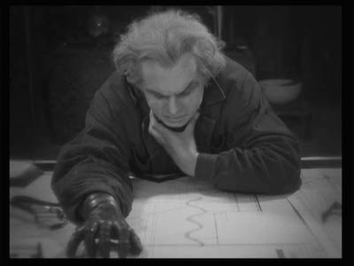
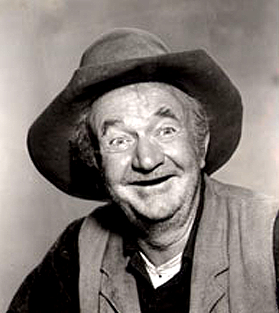

A direct descendant of Don Lope de Caldwell, Hans is the twenty term mayor of East Caldwell. Assassinated in 1944 by a cabal of Free-Masons, he continues to be re-elected to the highest office town.
A graduate of East Point Military Academy, Field Marshall von Friedrich has successfully defended the town against attacks from West and South Caldwells.
Dean of the East Caldwell Institute of Technology, Professor Girard is responsible for the architecture and design that has made East Caldwell the ninth wonder of the world.
The spiritual leader of East Caldwell, Archbishop O'Hallohan has saved the souls of thousands... and condemned the souls of millions.
An inspiration to police the world over, Sheriff "Gummy" Joe has kept the peace in East Caldwell for decades.